Technology is the greatest equalizer of this century. You can build natural and rich conversational experiences, you can build a computer program that uses machine learning techniques to perform human-like conversations.
There are many use cases we can take advantage of the use of voice. In this codelab we will use Google Cloud Platform, the YouTube API and Actions on Google to create a karaoke action.
What you will build
In this codelab, you're going to build a Karaoke Action. Your app will use:
| 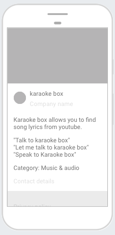 |
What you'll learn
- Build an Assistant action that consists of an Actions project, a Dialogflow agent with custom intents and entities, a webhook, and a Cloud Function.
- How to implement Action fulfillment using the Action on Google client library and the Dialogflow inline editor
What you'll need
- A recent version of a browser of your choice, such as Chrome.
- To be logged in your google account.
Create a Dialogflow project
Actions is how we name the apps for the assistant, we'll get started by creating a Dialogflow project
- Open the Dialogflow Console.
- Sign in with your Google account, if you haven't already
- When you land on the Dialogflow page, check the box next to Yes, I have read and accept the agreement and click Accept. (if it's the first time you're using Dialogflow)
- You should see the tool that resembles the image below, Dialogflow agent creation page. Name it karaoke and click CREATE: 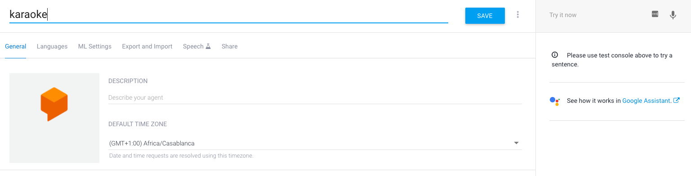
Intent: Default Welcome Intent
The welcome intent is the first message your users will get from your agent, usually a greeting. The welcome intent is also responsible for informing your users about their options and what they could do with your agent.
- Click on intents
- Click on "Default Welcome Intent"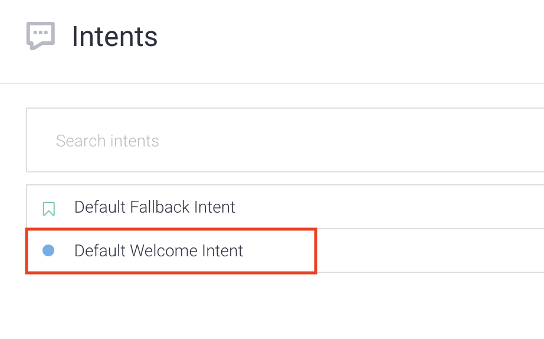
- Scroll down to the Responses section
- Click the bin icon to delete the default text responses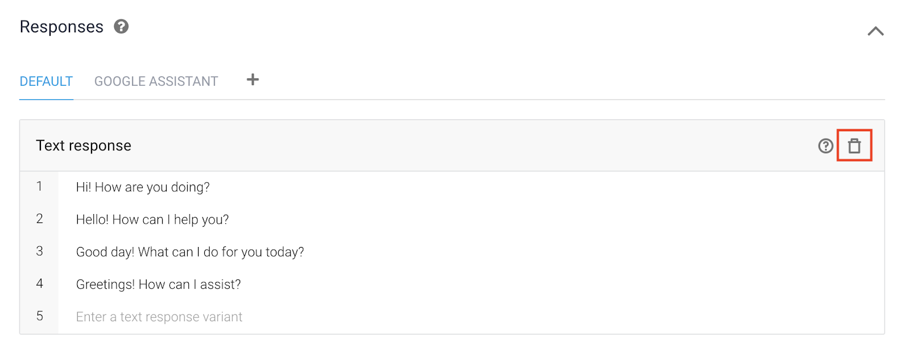
- Click on ADD RESPONSES > Text response,
- Type in the following: It's Karaoke time! What artist and song title are you searching for?
- Now scroll all the way up and click Save in the top-right corner.
You've just created the welcoming response to the first interaction of the users with your karaoke app.
Entities are powerful tools used for keyword extraction. Let's create the songs entity.
- On the left menu click Entity.
- Click the blue button that says Create entity.
- Name it song.
- Click the more (3 dots) button on the top right 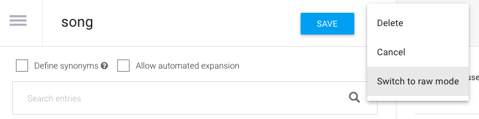
- Click Switch to raw mode
- Paste the data below within the CSV tab
"Hotel California","Hotel California" "Shooting Star","Shooting Star" "When I See You Smile","When I See You Smile" "No Matter What","No Matter What" "Walks Like A Woman","Walks Like A Woman" "No Sleep Till Brooklyn","No Sleep Till Brooklyn" "Loser","Loser" "In a Big Country","In a Big Country" "Rock Around the Clock","Rock Around the Clock" "AIN'T NO SUNSHINE","AIN'T NO SUNSHINE" "Cradle of Love","Cradle of Love" "Dancing With Myself","Dancing With Myself" "Eyes Without a Face","Eyes Without a Face" "My Life","My Life" "SHE'S ALWAYS A WOMAN","SHE'S ALWAYS A WOMAN"
- Click save.
- 🌟 You've created the song entity
- On the left menu click Entity.
- Click the blue button that says Create entity.
- Name it artist.
- Click the more (3 dots) button on the top right
- Click Switch to raw mode
- Paste the data below within the CSV tab
"@sys.music-artist","@sys.music-artist" "Eagles","Eagles" "Supertramp","Supertramp" "Survivor","Survivor" "The Beach Boys","The Beach Boys" "The Beatles","The Beatles" "The Clash","The Clash" "The Doors","The Doors" "The Goo Goo Dolls","The Goo Goo Dolls" "The Offspring","The Offspring" "The Police","The Police" "The Pretenders","The Pretenders" "The Ramones","The Ramones" "The White Stripes","The White Stripes" "The Who","The Who" "Twisted Sister","Twisted Sister" "U2","U2" "Van Halen","Van Halen" "Whitesnake","Whitesnake" "ZZ Top","ZZ Top"
- Click save.
- 🌟 You've created the artist entity
Let's create the intent that parses user input for fields that are required by the Youtube Data API.
- From the left-hand menu, click on the + icon by the Intents menu item. For the Intent name field, enter search.
- In the Training phrases field click Add Training Phrases.
- In the Add user expression field enter Backstreet boys - I want it that way and hit Enter.
- Select Backstreet boys and assign it the @sys.artist entity.
- Select I want it that way and assign it the @sys.song entity
- Add more training phrases and assign the correct entities to the words.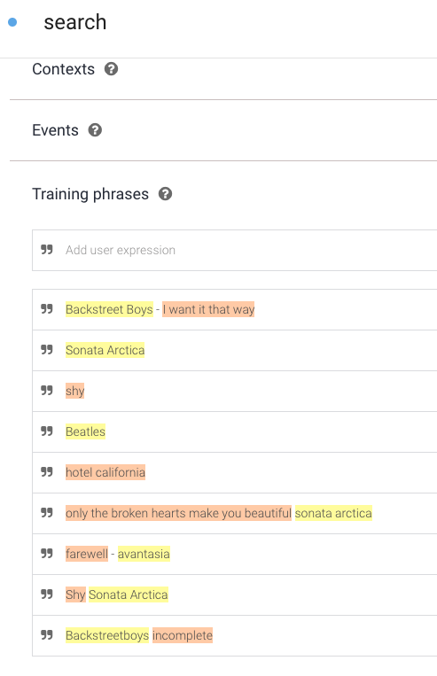
- Now that your training phrases have been added, scroll down and expand the Actions and parameters section.
- Now check the REQUIRED checkbox for the artist parameter. This tells Dialogflow to not trigger the intent until the parameter is properly provided by the user.
- Now click on Define prompts for the number parameter (right-hand side) and provide a re-prompt phrase. Enter in Who sings it? in the prompt field and then click Close. 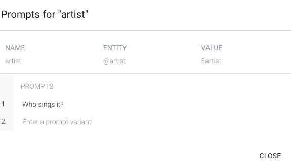
- Now scroll to the top of the page and click Save.
- Now scroll down to the Fullfilment section.
- Click the dropdown arrow and click Enable fulfillment.
- Then click the Enable webhook call for this intent slider: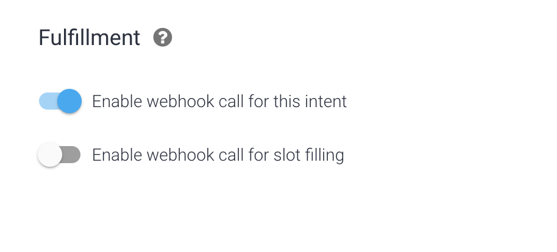
- This tells Dialogflow to call your fulfillment to generate a response to the user instead of using Dialogflow's response feature.
- In the Responses section right above fulfillment, click ADD RESPONSE. Then click on the Google Assistant tab.
- Move the toggle for Set this intent as end of conversation. This tells Dialogflow to relinquish control back to the Google Assistant after your fulfillment returns a response to the user. 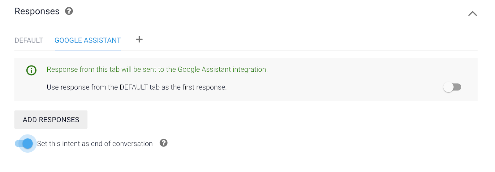
- Then scroll to the top of the intent and click SAVE once more to save the entire intent.
We will use the Youtube Data API v3 for searching videos. You can find the methods supported in this link to better understand the queries used in our code.
Enable the API
- Open the GCP Console
- Open the Navigation menu and select APIs & Services > Library.
- In the search bar, type Youtube Data API v3 and select it from the results page.
- Click Enable.
- Click the back button in your browser twice and ensure that your page resembles the following with the Youtube Data API enabled:
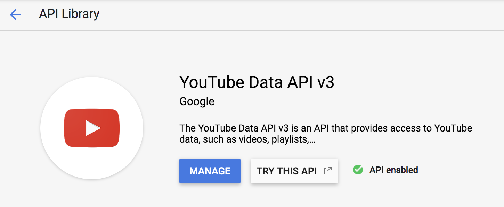
Get an API Key
To make Youtube Data API requests from your Cloud Function, you will need to login with your Google Account to access the Google API Console, request an API key, and register your application.
- Return to the GCP Console
- Open the Navigation menu.
- From there, select APIs & Services > Credentials.
- Click on the Create credentials dropdown
- Select API Key. You should see this input as below, with your generated key.

- Copy the API key and save it somewhere for later use, (e.g a text editor or notepad).
- Click Close.
When you set up your webhook, you pass information from a matched intent into a web service and get a result from it.
- On the left menu click on: Fulfilment
- Toggle on the Inline Editor(Powered by Cloud Functions for Firebase)
- Copy the
index.jsas seen below.
"use strict";
const {
dialogflow,
actionssdk,
Image,
Button,
BasicCard,
Table,
Carousel
} = require('actions-on-google');
const functions = require('firebase-functions');
const app = dialogflow({ debug: true });
const API_KEY = "ADD_YOUR_API_KEY";
app.intent("search", (conv, {song, artist}) => {
let query = `${artist} ${song}`;
console.log(song);
if (!song || song == 'undefined') {
query = conv.query;
}
const url = "https://www.googleapis.com/youtube/v3/search?part=snippet&maxResults=5&q=" + encodeURIComponent(query + " karaoke|lyrics")+ "&type=video&order=relevance&videoCategoryId=10&key=" + API_KEY;
console.log(url);
const axios = require('axios');
return axios.get(url)
.then(response => {
var output = JSON.stringify(response.data);
var song_fields = response.data.items[1];
return song_fields;
}).then(output => {
var song_title = output.snippet.title;
song_title = song_title.replace(/&/g, '&');
song_title = song_title.replace(/"/g, '\"');
var song_link = JSON.stringify(output.id.videoId);
var song_thumbnail = output.snippet.thumbnails.high.url;
conv.ask(`Finding your song...`);
conv.ask(new BasicCard({
title: `${song_title}`,
buttons: new Button({
title: `Let's sing`,
url: `https://www.youtube.com/watch?v=${song_link.slice(1, -1)}`,
}),
image: new Image({
url: song_thumbnail,
alt: 'Song thumbnail'
}),
display: 'CROPPED',
}));
conv.close(`${song_title}. Link: https://www.youtube.com/watch?v=${song_link.slice(1, -1)}. Enjoy! Bye`);
});
});
exports.dialogflowFirebaseFulfillment = functions.https.onRequest(app);
- Next, add your YOUTUBE API to the
app.jsfile:
const API_KEY = "ADD_YOUR_API_KEY";- Add the code snippet below to your
package.jsonfile:
{
"name": "dialogflowFirebaseFulfillment",
"description": "karaoke.",
"version": "0.0.1",
"author": "Amanda Cavallaro",
"engines": {
"node": "8"
},
"scripts": {
"start": "firebase serve --only functions:dialogflowFirebaseFulfillment",
"deploy": "firebase deploy --only functions:dialogflowFirebaseFulfillment"
},
"dependencies": {
"actions-on-google": "^2.2.0",
"firebase-admin": "^7.0.0",
"firebase-functions": "^2.2.0",
"dialogflow": "^0.8.0",
"dialogflow-fulfillment": "^0.6.1",
"axios": "0.16.2"
}
}
Check your Google Permission Settings
It's time to use the Actions simulator to begin testing your agent.
It is important to check that necessary permissions are enabled.
Visit the
Ensure that the following permissions are enabled:
- Web & App Activity
- Device Information
- Voice & Audio Activity
You can now close the Activity Controls page.
Test the action with the simulator
To test out your Action in the Actions console simulator:
- In the
Dialogflow Console left navigation, click on Integrations. - Then, click on Google Assistant > Integration Settings.
- Click Test to update your Actions project and load it into the Actions Console simulator. (If you see a ‘Check auto-preview setting' dialog, you can leave the ‘Auto-preview changes' option enabled, then click Continue.)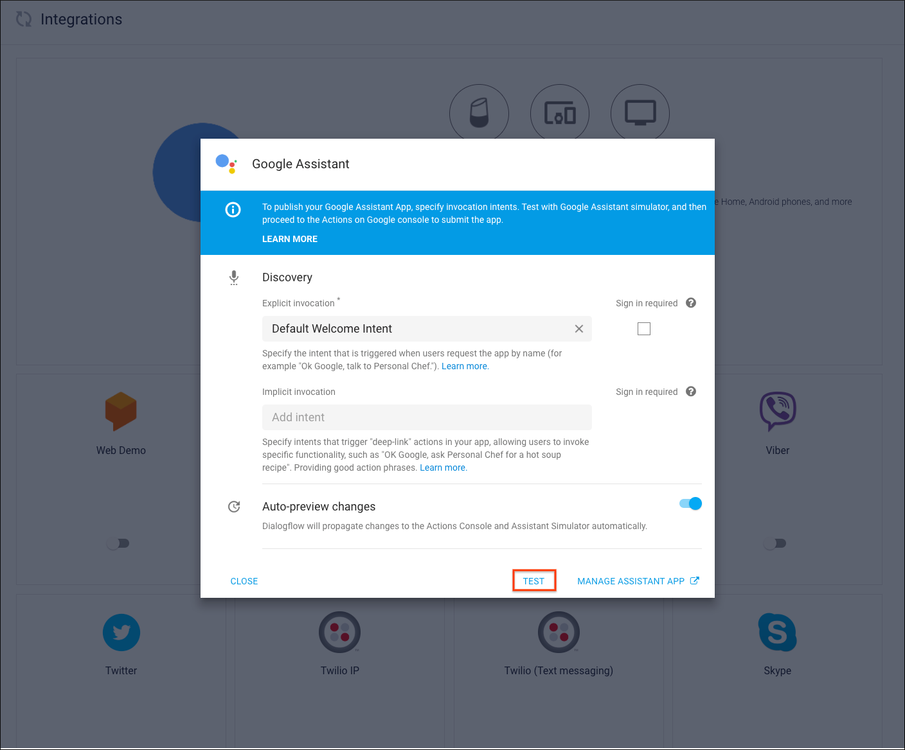
- To test your Action in the simulator, type "Talk to my test app" into the Input field and hit enter.
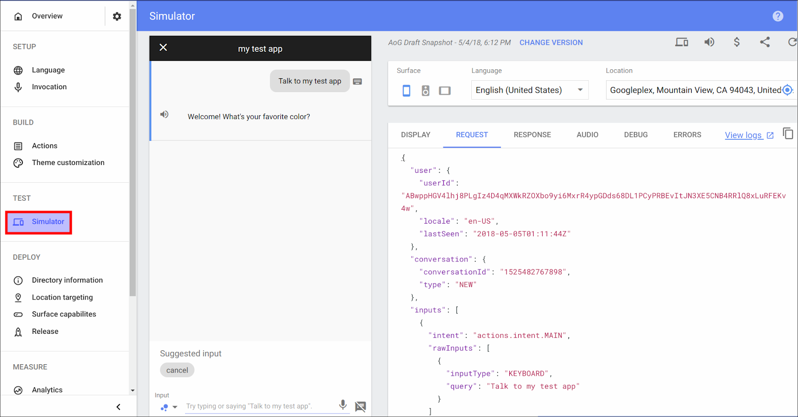
Notice that when your Action's welcome intent is invoked, the Assistant responds with the greeting message and prompts the user to provide the music artist and song title.
Return to the Actions console. Then from the left-hand menu, under the TEST header click Simulator. You should now be on the following page:
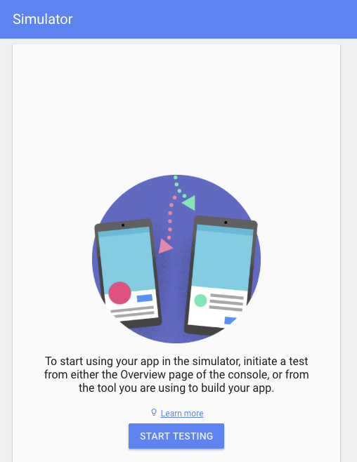
Through the Actions simulator you are able test your action using an intuitive interface that lets you simulate hardware devices and their settings
Reply by type/ saying a music artist and a song such as Eagles - Hotel California. You should receive a similar output in the right-hand panel, which includes the song name, link, and thumbnail:
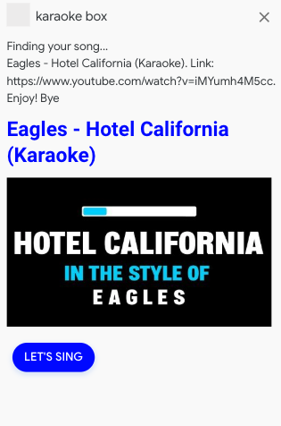
Try talking with your test app with new music artists and songs!
Congratulations!
You built a karaoke action with Actions on Google.
What we've covered
- How to build a robust Google Assistant application
- How to use the firebase inline-editor and cloud functions
- How to handling Youtube Data API requests
- How to set up an Actions project using the Dialogflow and Actions Consoles.
- How to create a welcome intent so that users can start a conversation with your Action.
- How to create conversational responses using Dialogflow intents and a custom webhook.
- How to test your Action in real-time using the Actions Console simulator.
- How to declare your conversation grammar with Dialogflow intents
What's next
- actions.google.com: The official documentation site for Actions on Google.
- Actions on Google GitHub repo: Sample code and libraries.
- Dialogflow.com: The official documentation site for Dialogflow.
- r/GoogleAssistantDev: The official Reddit community for developers working with the Google Assistant.
Credits
- This website was based on the qwiklabs: Google Assistant: Build a Youtube Entertainment App and Build Actions for the Google Assistant codelab 1.
- This data set was used for the songs and artists.